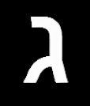
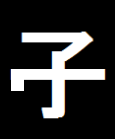

<!DOCTYPE html>
<html>
<head>
  <title>IAT Example</title>
  <script src="jspsych-6.0.4/jspsych.js"></script>
  <script src="jspsych-6.0.4/plugins/jspsych-iat-image.js"></script>
  <script src="jspsych-6.0.4/plugins/jspsych-iat-html.js"></script>
  <script src="jspsych-6.0.4/plugins/jspsych-html-keyboard-response.js"></script>
  <script src="jatos.js"></script>
  <link href="jspsych-6.0.4/css/jspsych.css" rel="stylesheet"></link>
</head>
<body>
</body>
<script>

var welcome_block = {
  type: 'html-keyboard-response',
  stimulus: '<p>Bienvenido al experimento!! Apretá cualquier tecla para empezar.</p>',
  post_trial_gap: 1500
};

var category_block = {
  type: 'html-keyboard-response',
  stimulus: "<p>“A continuación se le presentará un símbolo en la parte superior de la pantalla. " +
            "Luego, aparecerán dos símbolos más en la parte inferior de la pantalla. " +
            "Su tarea consiste en elegir uno de estos símbolos que crea que corresponde" +
            "al que está en la parte superior. Usted dispondrá de 3 segundos para" +
            "responder, si no responde, un cartel con la leyenda “Demasiado Lento” " +
            "aparecerá en la pantalla y se considerará como erróneo. " +
            "Para elegir el símbolo de la izquierda presione la letra E. " + // tecla ←. 
            "Para elegir el símbolo de la derecha presione la tecla I.  " + // la tecla →.
            "El experimento constará de tres bloques y luego una segunda fase de evaluación. " +
            "<div style='width: 700px;'>" +
            "</div>" +
            "<p>Apretá cualquier tecla para empezar.</p>",
  post_trial_gap: 1500
};


var trial_block = {
  timeline: [
    {
      type: 'iat-image',
      stimulus: jsPsych.timelineVariable('stimulus'),
      stim_key_association: jsPsych.timelineVariable('stim_key_association'),
      html_when_wrong: '<span style="color: red; font-size: 80px">X</span>',
      bottom_instructions: '<p>Si la respuesta no es correcta, aprecerá una X roja</p>',
      force_correct_key_press: true,
      display_feedback: true,
      trial_duration: 3000, //Only if display_feedback is false
      left_category_key: 'E',
      right_category_key: 'I',
      left_category_label: jsPsych.timelineVariable('left_category_label'), // ["</img>  "],
      right_category_label: jsPsych.timelineVariable('right_category_label'), // ["</img>  "],
      response_ends_trial: true,
      data: { iat_type: 'practice' }
    }
  ],
  timeline_variables: [
    {stimulus: "img/C2.png", stim_key_association: "left", left_category_label: ["</img>  "], right_category_label: ["</img>  "]},
    {stimulus: "img/C2.png", stim_key_association: "left", left_category_label: ["</img>  "], right_category_label: ["</img>  "]},
    {stimulus: "img/C1.png", stim_key_association: "left", left_category_label: ["</img>  "], right_category_label: ["</img>  "]},
    {stimulus: "img/C1.png", stim_key_association: "left", left_category_label: ["</img>  "], right_category_label: ["</img>  "]},
    {stimulus: "img/C1.png", stim_key_association: "left", left_category_label: ["</img>  "], right_category_label: ["</img>  "]},
    {stimulus: "img/A1.png", stim_key_association: "left", left_category_label: ["</img>  "], right_category_label: ["</img>  "]},
    {stimulus: "img/A1.png", stim_key_association: "right", right_category_label: ["</img>  "], left_category_label: ["</img>  "]},
    {stimulus: "img/A1.png", stim_key_association: "right", right_category_label: ["</img>  "], left_category_label: ["</img>  "]},
    {stimulus: "img/A1.png", stim_key_association: "right", right_category_label: ["</img>  "], left_category_label: ["</img>  "]},
    {stimulus: "img/A1.png", stim_key_association: "right", right_category_label: ["</img>  "], left_category_label: ["</img>  "]},
    {stimulus: "img/A2.png", stim_key_association: "right", right_category_label: ["</img>  "], left_category_label: ["</img>  "]},
    {stimulus: "img/A2.png", stim_key_association: "right", right_category_label: ["</img>  "], left_category_label: ["</img>  "]}
  ],
  randomize_order: true,
  repetitions: 2
};


  var instructions_block5 = {
    type: 'html-keyboard-response',
    stimulus: "<p>Esa fue la parte de entrenamiento, ahora viene la de evaluacion. " + // tecla ←. 
            "Si no aprendes hay tabla  " + // la tecla →.
            "<div style='width: 700px;'>" +
            "</div>" +
            "<p>Apretá cualquier tecla para empezar.</p>"
  };

  var trial_block5 = {
  timeline: [
    {
      type: 'iat-image',
      stimulus: jsPsych.timelineVariable('stimulus'),
      stim_key_association: jsPsych.timelineVariable('stim_key_association'),
      html_when_wrong: '<span style="color: red; font-size: 80px">X</span>',
      bottom_instructions: '<p>Si la respuesta no es correcta, aprecerá una X roja</p>',
      force_correct_key_press: true,
      display_feedback: true,
      trial_duration: 3000, //Only if display_feedback is false
      left_category_key: 'E',
      right_category_key: 'I',
      left_category_label: jsPsych.timelineVariable('left_category_label'), // ["</img>  "],
      right_category_label: jsPsych.timelineVariable('right_category_label'), // ["</img>  "],
      response_ends_trial: true,
      data: { iat_type: 'practice' }
    }
  ],
  timeline_variables: [
    {stimulus: "img/C2.png", stim_key_association: "left", left_category_label: ["</img>  "], right_category_label: ["</img>  "]},
    {stimulus: "img/C2.png", stim_key_association: "left", left_category_label: ["</img>  "], right_category_label: ["</img>  "]},
    {stimulus: "img/C1.png", stim_key_association: "left", left_category_label: ["</img>  "], right_category_label: ["</img>  "]},
    {stimulus: "img/C1.png", stim_key_association: "left", left_category_label: ["</img>  "], right_category_label: ["</img>  "]},
    {stimulus: "img/C1.png", stim_key_association: "left", left_category_label: ["</img>  "], right_category_label: ["</img>  "]},
    {stimulus: "img/A1.png", stim_key_association: "left", left_category_label: ["</img>  "], right_category_label: ["</img>  "]},
    {stimulus: "img/A1.png", stim_key_association: "right", right_category_label: ["</img>  "], left_category_label: ["</img>  "]},
    {stimulus: "img/A1.png", stim_key_association: "right", right_category_label: ["</img>  "], left_category_label: ["</img>  "]},
    {stimulus: "img/A1.png", stim_key_association: "right", right_category_label: ["</img>  "], left_category_label: ["</img>  "]},
    {stimulus: "img/A1.png", stim_key_association: "right", right_category_label: ["</img>  "], left_category_label: ["</img>  "]},
    {stimulus: "img/A2.png", stim_key_association: "right", right_category_label: ["</img>  "], left_category_label: ["</img>  "]},
    {stimulus: "img/A2.png", stim_key_association: "right", right_category_label: ["</img>  "], left_category_label: ["</img>  "]}
  ],
  randomize_order: true,
  repetitions: 1
};


  var debrief_block = {
    type: "html-keyboard-response",
    stimulus: function() {
      // calculate D-score from https://faculty.washington.edu/agg/pdf/GB&N.JPSP.2003.pdf
      // first find mean RT
      var bad_old = jsPsych.data.get().filter({iat_type: 'bad-old'}).filterCustom(function(x) { return x.rt < 10000 });
      var mean_correct_responses_bad_old = bad_old.filter({correct: true}).select('rt').mean();
      var bad_young = jsPsych.data.get().filter({iat_type: 'bad-young'}).filterCustom(function(x) { return x.rt < 10000 });
      var mean_correct_responses_bad_young = bad_young.filter({correct: true}).select('rt').mean();

      // get overall sd
      var sd = bad_old.join(bad_young).filter({correct: true}).select('rt').sd();

      var d = (mean_correct_responses_bad_young - mean_correct_responses_bad_old) / sd;

      return "<p>You're done! Below is some information about how you performed.</p>"+
        "<p>When the pairs were BAD/YOUNG and GOOD/OLD, it took you an average of <strong>"+Math.floor(mean_correct_responses_bad_young)+"ms</strong> to respond.</p>"+
        "<p>When the pairs were BAD/OLD and GOOD/YOUNG, it took you an average of <strong>"+Math.floor(mean_correct_responses_bad_old)+"ms</strong> to respond.</p>"+
        "<p>Your D score, an index of performance that takes into account this difference and the overall level of variability in your responses, is <strong>"+d.toFixed(2)+"</strong></p>"+
        "<p>For reference, the Project Implicit IAT website labels D scores above 0.15 as a slight bias, scores above 0.35 as a moderate bias, and scores above 0.65 a strong bias.</p>"
    }
  };

  var timeline = [];
  timeline.push(welcome_block);
  timeline.push(category_block);
  timeline.push(trial_block);
  timeline.push(instructions_block5);
  timeline.push(trial_block5);
  timeline.push(debrief_block);


  /* start the experiment */
  jatos.onLoad(function () {
    jsPsych.init({
        timeline: timeline,
        on_finish: function() {
            var resultJson = jsPsych.data.get().json();
            jatos.submitResultData(resultJson, jatos.startNextComponent);
        }
    });
  });
  </script>
  </html>
